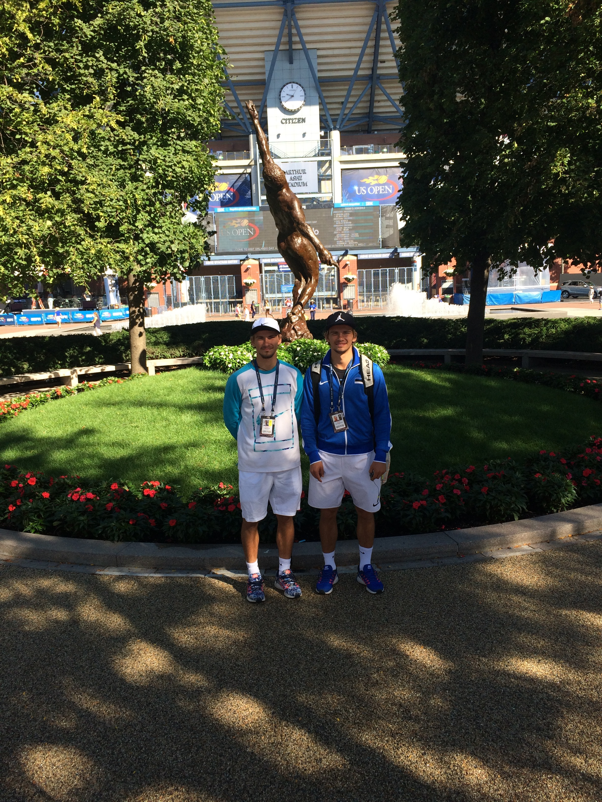
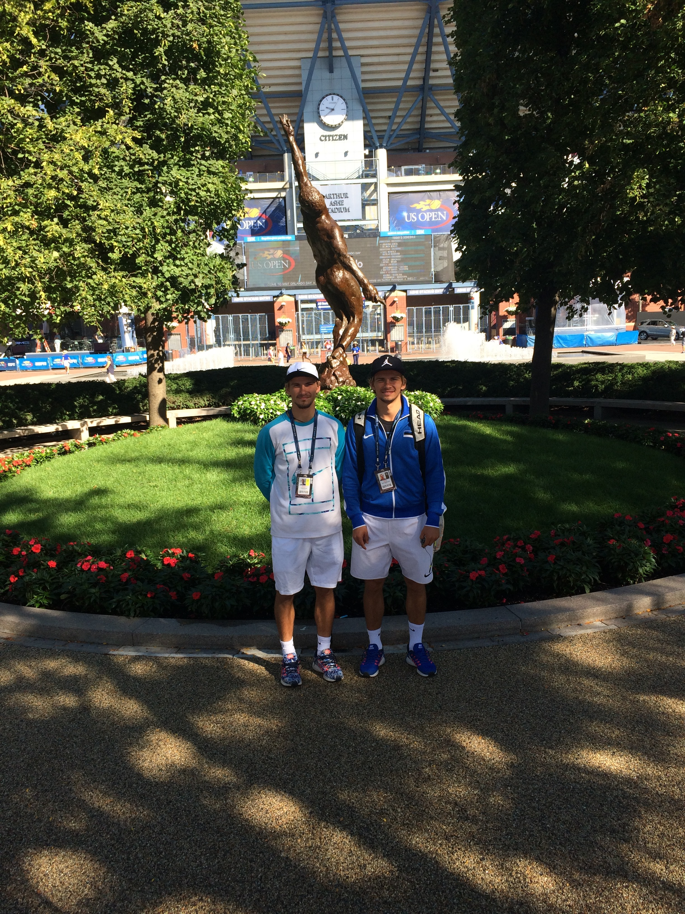
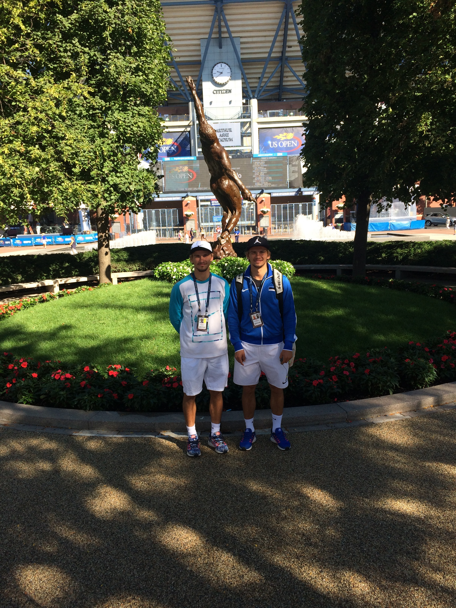

I started playing tennis when I was four years old. My parents introduced me to tennis mostly because my cousin was the Estonian juniors champion at that time. At first, I liked the sport mostly because practices were at noon, which meant that I did not have to go to kindergarten. I also liked the sport from the start because I met so many new people who I am still friends with today. The best memories from my childhood are summer tennis camps.
Junior tennis.
I started practicing seriously when I was 14 because I had some promising results. I started playing international tournaments around Europe at first and then played several in the United States. Between the ages of 14 and 19, I played tournaments in more than 20 countries in Europe, Asia, Africa, America, and Australia. In 2017, I participated in the juniors Australian Open, US Open, French Open, and Wimbledon, and my best juniors ranking was 41.

Vladimir Ivanov and I playing against Georgian Davis Cup team while representing Estonia.
Michigan.
Tennis was also one of the biggest reasons I came to the University of Michigan. Michigan has historically had a strong tennis program. We have won the BIG 10 conference more than 30 times and one NCAA championship in 1957. During the past two and a half years I have been at Michigan, the team has done great. In 2018, we made the sweet 16 in the NCAA tournament for the first time in 15 years. In February of 2020, our team was ranked 4th, which is the best ranking the team has had in 20 years. I have been ranked as high as 21 in singles and two in doubles in college tennis rankings.

 
